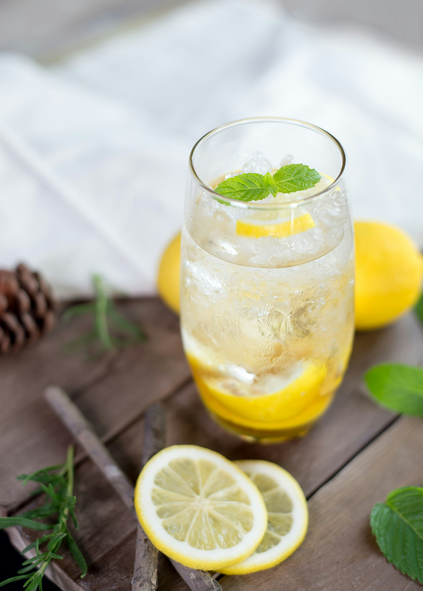

Lemonade

A picrure of a Lemonade
Description:
Prep time: 10 mins
Cook time: 5 mins
Total time: 15mins
Servings: 10
Ingredients
- 1 ¾ cups white sugar
- 1 cup water
- 9 medium lemons, or more as needed
- 7 cups ice-cold water
- ice as needed
Steps
- Gather all ingredients.
- Combine sugar and 1 cup water in a small saucepan. Stir to dissolve sugar while mixture comes to a boil. Set aside to cool slightly.
- Meanwhile, roll lemons around on your counter to soften. Cut in half crosswise, and squeeze into a liquid measuring cup. Add pulp to the juice, but discard any seeds. Continue juicing until you have 1 1/2 cups fresh juice and pulp.
- Pour 7 cups ice-cold water into a pitcher. Stir in lemon juice and pulp, then add simple syrup to taste. Add ice.
More recipies
Credits: Allrecipe.com
Project: The Odin Project
Image: Unsplash.com